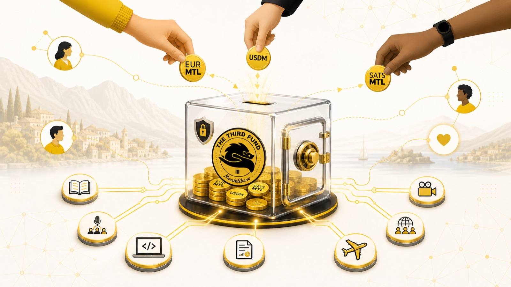
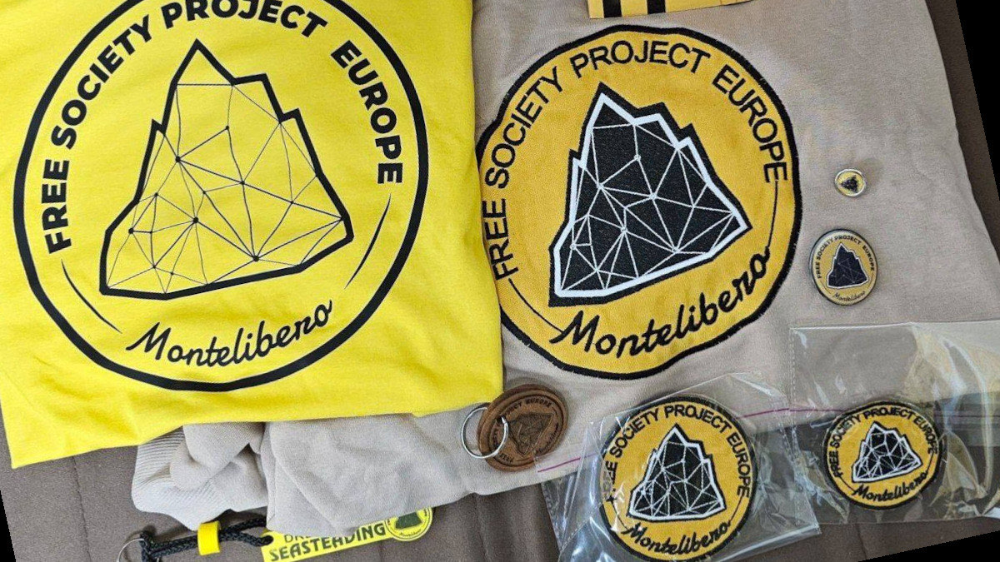

Karte i otvoreni podaci za Bar
Grant za rad na OpenStreetMapu i lokalnim otvorenim podacima.
Izvor na ruskomFond zajednice · Od 2023.
Udružujemo donacije za projekte Montelibera: od obrazovanja i izdavaštva do lokalne infrastrukture i događaja.

Donatori šalju sredstva na račun fonda za donacije.
Savjet razmatra prijedloge i odlučuje kako da ih podrži.
Predlagač ili koordinator vodi projekat. Javne odluke i izvještaji prikazuju rad fonda.
Izbor iz javne evidencije fonda. Podrška ima različite oblike, uključujući grantove, sponzorstva i beskamatne zajmove.
Grant za rad na OpenStreetMapu i lokalnim otvorenim podacima.
Izvor na ruskom


Beskamatni zajam za proizvodnju promotivnih predmeta zajednice.
Izvor na ruskomPodrška organizaciji festivala i govornicima.
Izvor na ruskomPodrška prevodu i štampanju knjige Titusa Gebela na crnogorskom.
Izvor na ruskomUlaznice za učešće na festivalima 2023. i 2024. godine.
Izvor na ruskomBeskamatni zajam za štampanje izdanja knjige.
Izvor na ruskomPodrška putovanju predstavnika na konferenciju.
Izvor na engleskomSponzorstvo libertarijanske konferencije u Tbilisiju.
Izvor na ruskomDonacije medijskom projektu zajednice.
Izvor na ruskomDonirajte
Fond prihvata EURMTL, USDM i SATSMTL — tokene na mreži Stellar. Linkovi ka novčanicima ispod koriste EURMTL.
Prije slanja provjerite mrežu, primaoca i izdavaoca tokena. Transferi su nepovratni i moguće su naknade. Ovaj sajt nikada ne traži tajni ključ niti potpisuje uplate.
Prije prenosa provjerite javne podatke o tokenu. Potrebna vam je pomoć ili želite da doprinesete na drugi način? Prvo kontaktirajte Savjet.
GACKTN5DAZGWXRWB2WLM6OPBDHAMT6SJNGLJZPQMEZBUR4JUGBX2UK7VEURMTL · USDM · SATSMTL (Izvor na ruskom)
Kontaktirajte SavjetZatražite podršku
Svako može predložiti ideju koja pomaže Monteliberu, uključujući podršku pojedincu. Ne morate biti član.
Oba linka otvaraju Telegram. Bot šalje vašu poruku Savjetu; poruke u chatu za diskusiju su javne.
Vi ili vaš koordinator vodićete projekat; prijedlog može uključiti troškove koordinacije. Savjet odlučuje da li će pružiti podršku.
Izbor odluka o finansiranju, sa linkovima ka izvornim objavama. Arhiva izvještaja sadrži širu evidenciju.
Donacija · Izvor na ruskom
Donacija · Izvor na ruskom
Donacija · Izvor na ruskom
Otvorite arhivu izvještaja (Izvor na ruskom)
Savjet čine najveći aktivni donatori. Za odobravanje trošenja sredstava sa glavnog računa koristi se više potpisa. Taj račun je odvojen od računa za donacije.
Kontaktirajte Savjet prije slanja ako želite da razgovarate o doprinosu za određenu namjenu.
Pitajte Savjet o drugim načinima doprinosa. Nemojte slati tokene sa druge mreže na Stellar adresu.
Donacije podržavaju rad fonda. Njima se ne kupuje vlasnički udio niti se obećava prinos.